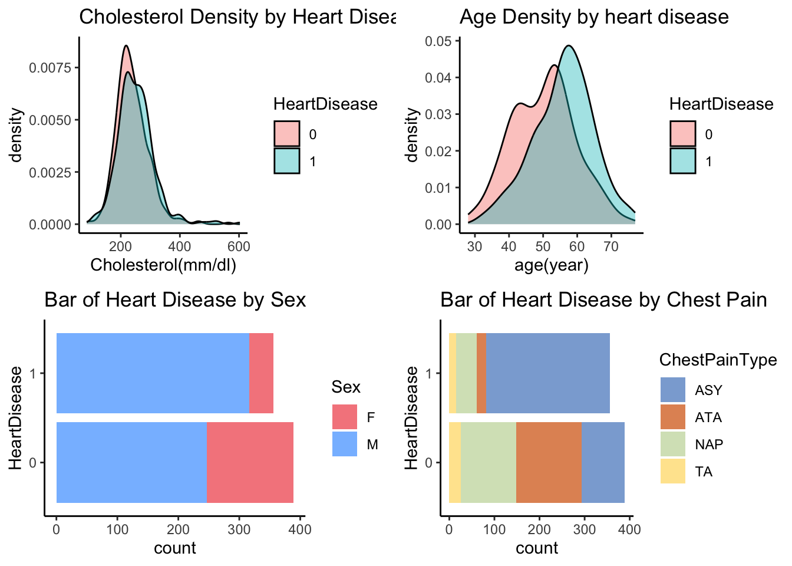
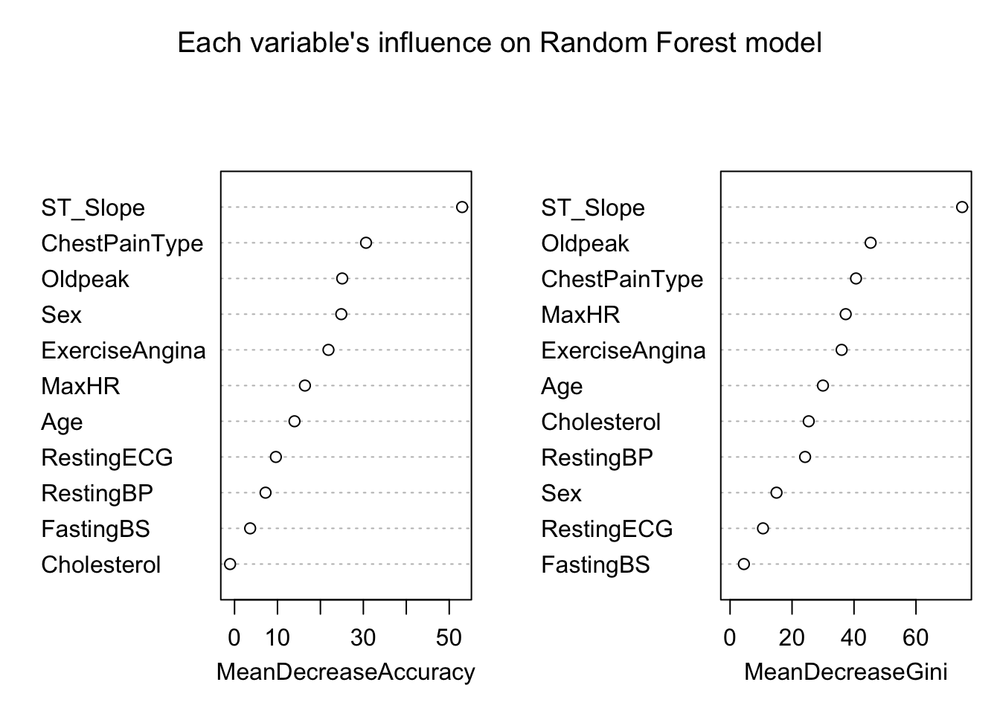
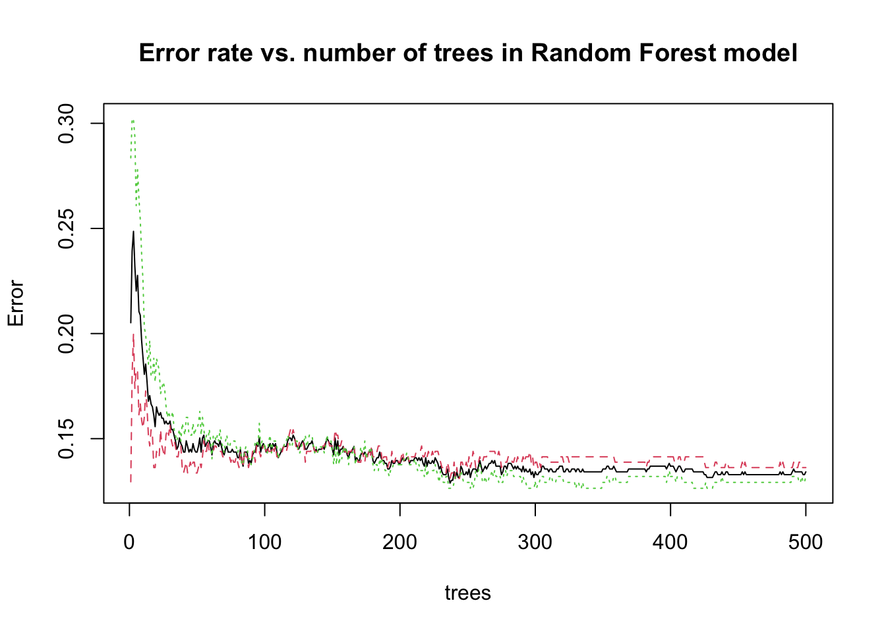
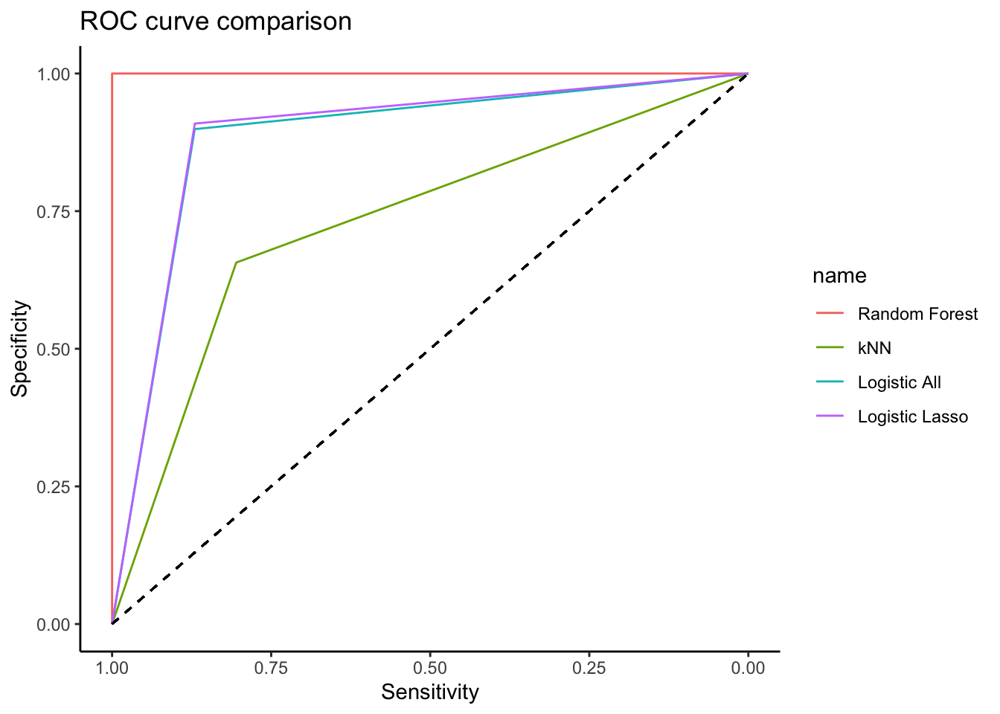
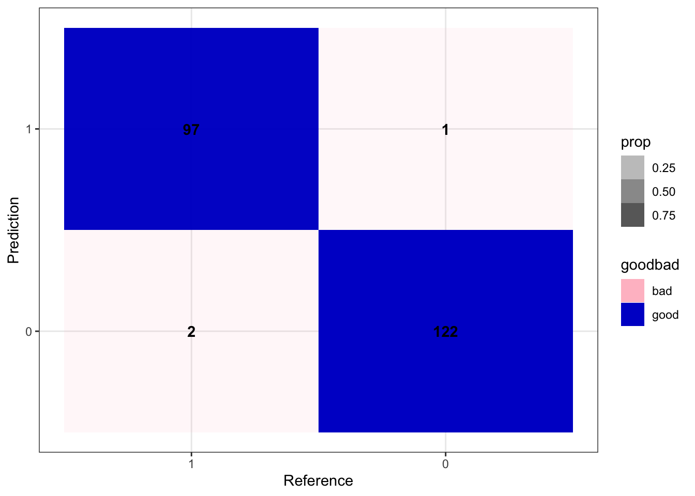

Cardiovascular diseases (CVDs) are the 1st cause of death globally, it is predicted that xxx people will die of CVDs. Heart failure is a common event caused by CVDs. Early detection and continuous health management are recommended for people who have high risk for CVDs. With the data set that contains 11 covariates that can be used to predict heart failure, our study aims to study how the important factors are related to heart attach event and to make prediction upon the given factors.
To be more detailed, the data set was created by combining 5 heart data sets. The combined final version data set contains 11 factors that are related to heart failure. The factors include basic information such like Age, Sex; physical exam results such like Chest pain type, resting blood pressure, cholesterol, fasting blood sugar, resting ECG, max heart rate, exercise-induced angina, oldpeak of ST, ST slope; and binary response variable heart disease.
To clean the data, entries that with cholesterol being 0 are removed. Entries that with negative Oldpeak and 0 blood pressure are also removed. After cleaning, there are 745 rows in the data set and 12 variables related to heart failure.
To have a better understanding of the data, we perform the exploratory data analysis using a table to summarize all the variables by the response variable heart disease. Based on table, male older than 55 years old have higher risk of heart disease; those who have heart disease are likely to have ASY (Asymptomatic) pain chest type, flat peak exercise ST segment slope, and blood sugar > 120 mg/dl. To further see the distribution of these factors that have significant difference in heart disease and non heart disease groups in the table, plots are done for age, cholesterol, sex, and chest pain type.
As the response variable heart disease is binary with values Normal (0) and Heart Disease (1), Logistic regression model and its extension models are fitted. This include logistic model with all available covariates and regularization method where we do the penalized logistic regression.
In order to fit the penalized logistic regression, Lasso (Least Absolute Shrinkage and Selection Operator) is considered. To find the tuning parameter \(\lambda\), 10-fold cross validation on a grid of 100 possible \(\lambda\) values are proceeded within the training set (80% of whole data set) to select the \(\lambda\) which yields the lowest average test error rate. With the best \(\lambda\), LASSO selected variables are generated and fit into logistic model.
K-Nearest Neighbor model is fitted with all the 11 covariates. The best number of neighbors K will be selected by using 10-fold cross validation inside the training set again. K with highest accuracy will be selected as the best number of neighbors and used in the kNN model prediction.
Random Forest model is also performed. The best number of variable to random sample as candidates at each split is selected by Cross-validation within the training set created earlier.
As described previously, the hyper-parameters are selected by cross-validation on the training set, which is a random sample that takes 80% of the whole data set after cleaning. The Lasso selected variables for Logistic regression are Chest pain type, Resting blood pressure, Cholesterol, Fasting blood sugar, Exercise-induced angina, Oldpeak of ST, ST slope. Best K for kNN model is 8. The number of variable to random sample as candidates at each split is 2 for random forest model.
By conducting 10-fold Cross-Validation with the four candidate models (Logistic-All, Logistic-Lasso, KNN, Random Forest), the test performance is described in Table 2. Results of Four Models from 10-fold Cross-Validation. The probability cutoff we select is the default 0.5 for logistic prediction, because the response variable is balanced. It is clear that from the table, Random Forest model has the best performance among the four models. Random Forest model with mtry=2 has the lowest test error rate (0.009)/highest accuracy, highest specificity (0.987) and sensitivity (0.995). The worst performance is from KNN with K=9. Logistic Lasso has the second best performance, slightly better than Logistic with all variables.
The influence of each variable on model in Random Forest is shown in Figure 2. Each Variable’s Influence on Random Forest Model. ST_slope, ChestpainType, and Oldpeak are the most influential factors.
To examine the error rate versus the number of trees, the result is shown in Figure 3. Error Rate vs. Number of Trees in Random Forest Model. There is little change in error rate after about 150 trees.
The confusion matrix of random forest is shown in Table 3. Confusion Matrix of Best Model - Random Forest.
Other than Random Forest, Logistic with Lasso selected variables is the second best model in terms of test error rate, sensitivity, specificity. The model summary of the Logistic with Lasso selected variables is shown as Table 4. Summary of Logistic with Lasso Selected Variables. From Table 4, the significant factors are Age (p-value=0.015), Sex (<0.001), ChestpainType (<0.001 for 3 levels), ExerciseAngina (<0.001), Oldpead (0.003), ST_slope(flat=0.014, up=0.030). Among these, Male have higher odds compared to women; Chest pain ASY type has higher odds compared to type ATA, NAP, TA; Exercise Angina Yes has higher odds than No; ST slope flat and up positions have seperately higher and lower odds compared to the reference group.
As in Figure 4. ROC Curve Comparison on a Single Test Set, we split a new train/test set with ratio 7:3, and the ROC curves are shown in the plot. Similarly, Random Forest performs best.
Figure 1. Exploratory Data Analysis - Cholesterol, Age, Sex, Chest Pain

Figure 2. Each Variable’s Influence on Random Forest Model

Figure 3. Error Rate vs. Number of Trees in Random Forest Model

Figure 4. ROC Curve Comparison on a Single Test Set

Figure 5. Confusion Matrix of Best Model - Random Forest

Table 1. Exploratory Data Analysis
| Normal (N=389) |
Heart Disease (N=356) |
Total (N=745) |
|
|---|---|---|---|
| Sex | |||
| F | 142 (36.5%) | 40 (11.2%) | 182 (24.4%) |
| M | 247 (63.5%) | 316 (88.8%) | 563 (75.6%) |
| Age | |||
| Mean (SD) | 50.2 (9.29) | 55.9 (8.82) | 52.9 (9.49) |
| Median [Min, Max] | 51.0 [28.0, 76.0] | 57.0 [31.0, 77.0] | 54.0 [28.0, 77.0] |
| ChestPainType | |||
| ASY | 96 (24.7%) | 274 (77.0%) | 370 (49.7%) |
| ATA | 145 (37.3%) | 21 (5.9%) | 166 (22.3%) |
| NAP | 122 (31.4%) | 46 (12.9%) | 168 (22.6%) |
| TA | 26 (6.7%) | 15 (4.2%) | 41 (5.5%) |
| RestingBP | |||
| Mean (SD) | 130 (16.2) | 136 (18.0) | 133 (17.3) |
| Median [Min, Max] | 130 [94.0, 190] | 136 [92.0, 200] | 130 [92.0, 200] |
| Cholesterol | |||
| Mean (SD) | 239 (55.3) | 251 (62.5) | 245 (59.1) |
| Median [Min, Max] | 232 [85.0, 564] | 246 [100, 603] | 237 [85.0, 603] |
| FastingBS | |||
| Blood Sugar > 120 mg/dl | 346 (88.9%) | 274 (77.0%) | 620 (83.2%) |
| otherwise | 43 (11.1%) | 82 (23.0%) | 125 (16.8%) |
| RestingECG | |||
| LVH | 81 (20.8%) | 95 (26.7%) | 176 (23.6%) |
| Normal | 257 (66.1%) | 188 (52.8%) | 445 (59.7%) |
| ST | 51 (13.1%) | 73 (20.5%) | 124 (16.6%) |
| MaxHR | |||
| Mean (SD) | 149 (23.1) | 131 (22.3) | 140 (24.5) |
| Median [Min, Max] | 150 [69.0, 202] | 130 [71.0, 195] | 140 [69.0, 202] |
| ExerciseAngina | |||
| N | 339 (87.1%) | 119 (33.4%) | 458 (61.5%) |
| Y | 50 (12.9%) | 237 (66.6%) | 287 (38.5%) |
| Oldpeak | |||
| Mean (SD) | 0.395 (0.678) | 1.46 (1.15) | 0.903 (1.07) |
| Median [Min, Max] | 0 [0, 4.20] | 1.50 [0, 6.20] | 0.500 [0, 6.20] |
| ST_Slope | |||
| Down | 11 (2.8%) | 32 (9.0%) | 43 (5.8%) |
| Flat | 75 (19.3%) | 279 (78.4%) | 354 (47.5%) |
| Up | 303 (77.9%) | 45 (12.6%) | 348 (46.7%) |
Table 2. Results of Four Models from 10-fold Cross-Validation
| Description | Test Error Rate | Sensitivity | Specificity |
|---|---|---|---|
| Logistic - All | 0.130 | 0.871 | 0.868 |
| Logistic - Lasso | 0.127 | 0.871 | 0.873 |
| KNN | 0.262 | 0.729 | 0.751 |
| Random Forest | 0.009 | 0.992 | 0.990 |
Table 3. Summary of Logistic with Lasso Selected Variables
| Estimate | Std. Error | Pr(>|z|) | |
|---|---|---|---|
| (Intercept) | -5.587 | 1.354 | 0.0000368 |
| Age | 0.033 | 0.014 | 0.0148479 |
| SexM | 1.853 | 0.312 | 0.0000000 |
| ChestPainTypeATA | -1.683 | 0.350 | 0.0000015 |
| ChestPainTypeNAP | -1.565 | 0.298 | 0.0000002 |
| ChestPainTypeTA | -1.608 | 0.475 | 0.0007018 |
| RestingBP | 0.012 | 0.007 | 0.1103731 |
| Cholesterol | 0.003 | 0.002 | 0.1810311 |
| FastingBSotherwise | 0.298 | 0.328 | 0.3630205 |
| ExerciseAnginaY | 0.887 | 0.263 | 0.0007305 |
| Oldpeak | 0.418 | 0.140 | 0.0027933 |
| ST_SlopeFlat | 1.276 | 0.520 | 0.0141500 |
| ST_SlopeUp | -1.220 | 0.563 | 0.0302676 |
2. Comments